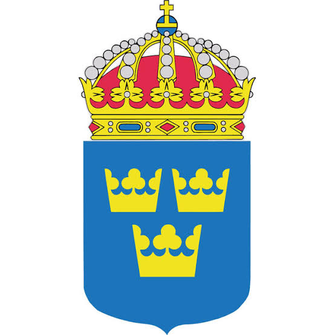
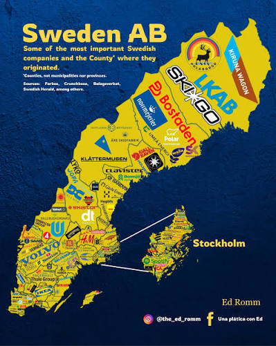

El paradigma del Modelo Nórdico: Un análisis detallado de la coexistencia entre la alta competitividad del libre mercado y un profundo Estado de Bienestar.
Tipo de Economía
Mixta
Moneda
Corona (SEK)
PIB per cápita
Alto
Índice Gini
Muy Bajo (Equitativo)
Sección 1
Introducción: Suecia representa uno de los ejemplos más exitosos de una economía mixta. Este modelo, frecuentemente llamado "Modelo Nórdico", refuta la idea de que se debe elegir exclusivamente entre capitalismo o socialismo. Combina el dinamismo y la eficiencia del libre mercado con objetivos sociales garantizados por el Estado.
La producción está altamente industrializada, orientada fuertemente hacia la exportación (tecnología, maquinaria, vehículos, productos farmacéuticos). La organización productiva se rige por lógicas capitalistas de eficiencia y rentabilidad privada.
A diferencia de otros países, el gobierno sueco rara vez interviene directamente en las fábricas o establece salarios mínimos por ley. La producción se organiza mediante un altísimo nivel de cooperación y negociación colectiva directa entre los poderosos sindicatos de trabajadores y las asociaciones de empleadores.

LKAB & Vattenfall
Excepciones: Empresas de propiedad del Estado (Minería y Energía).
Sección 2
Existe un mito común de que Suecia, al tener fuertes políticas sociales, tiene los medios de producción estatizados. La realidad es opuesta: alrededor del 90% de las empresas y recursos productivos son de propiedad estrictamente privada. El tejido empresarial incluye desde grandes multinacionales hasta un ecosistema vibrante de startups. El Estado reserva su propiedad casi exclusivamente para monopolios naturales o recursos estratégicos (minería de hierro, partes de la red eléctrica y ferroviaria).
Las decisiones económicas macro y micro están fragmentadas:
Sección 3
Los mercados en Suecia son altamente abiertos, desregulados en materia de comercio e integrados a la economía global. De hecho, en varios índices de libertad económica, Suecia puntúa más alto que muchas economías consideradas puramente capitalistas. No existen fijaciones artificiales de precios por parte del gobierno para los bienes comerciales, fomentando una competencia feroz basada en la innovación (I+D).
El papel del Estado es fundamental, pero no como productor, sino como recaudador y redistribuidor. A través de un sistema de impuestos altos y progresivos, el Estado financia una inmensa red de seguridad (seguro de desempleo, licencias de maternidad/paternidad generosas, pensiones). Además, el Estado es un gran empleador en el sector servicios, proporcionando médicos, enfermeros y profesores directamente a la población.
Facilidad extrema para crear empresas, defender derechos de propiedad y competir globalmente sin aranceles proteccionistas.
Impuestos progresivos (hasta el 50%+ para rentas altas) aseguran que ninguna persona caiga en la pobreza extrema.
Suecia opera bajo un sistema de distribución dual:
El caso de la economía mixta sueca demuestra empíricamente que la dicotomía entre eficiencia económica y equidad social es falsa.
Nos enseña que es posible utilizar el capitalismo como motor de producción e innovación, y aplicar políticas de bienestar social para la distribución de esa riqueza, garantizando prosperidad, libertad y dignidad para todos sus ciudadanos.
¡Muchas gracias por su atención!